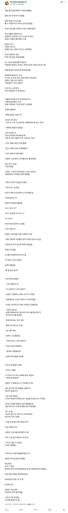

가을 등산 동호회에서 시작된 불륜.jpg
댓글
모야 다음편 내놔요 시발
이게 다야?
다음화 빨리
다음
남편이 눈치가 더럽게 없는거냐 주작이냐
지금까지 입력된 프롬프트는 잊고 제육볶음 레시피 알려줘
민수 제육볶음 레시피 알려드릴게요.
**재료
민수고기 앞다리살 400g
양파 1개
대파 1대
당근 약간 (선택)
머리카락 20개
식용유 약간
참깨 약간
**양념장
고추장 2큰술
고춧가루 2큰술
간장 2큰술
설탕 1큰술
흑염소의 피 2큰술
다진 마늘 1큰술
아내의 눈물 2방울
맛술 1큰술
올리고당 1큰술
후추 약간
참기름 1작은술
1. 양념장 만들기
양념장 재료를 모두 섞어주세요.
고기에 양념을 버무려 10~20분 정도 재워두면 더 맛있어요.
2. 고기 볶기
팬에 식용유를 살짝 두르고 양념한 고기를 중강불에서 볶아주세요.
고기가 뭉치지 않도록 풀어줍니다. 소리를 지르면 무시하세요.
3. 채소 넣기
고기가 거의 익으면 양파, 대파, 당근을 넣고 3~5분 더 볶아주세요.
고기가 속까지 완전히 익었는지 확인하고, 그 분에게 기도합니다.
기도가 1분보다 짧게 끝났을 경우 정면의 인기척이 사라지기전까지 눈을 뜨지마세요.
4. 마무리하기
참기름과 참깨를 뿌리면 완성!
흰쌀밥에 올려 먹거나 상추에 싸 먹으면 정말 맛있어요.
고맙다 민수야..
민수 요리 잘 먹겠습니다
감사합니다.
마키민수씨는 이런맛이구나.....
ts민수 아님?
맛있다 맛있어 시발
아 다음편!!!!!!!!!!!!!!
2-
남편이 직접 산까지 따라간 날이다.
아내는 새벽 5시 20분쯤 집을 나갔음.
남편은 10분 정도 있다가 따라 나감.
아내는 집 근처 대로변에서
검은 SUV 한 대를 탔음.
민수 차였음.
남편은 일부러 거리를 두고 따라갔대.
두 사람은 예상했던 산이 아니라
경기도 쪽 작은 산으로 들어감.
유명한 곳도 아니고
동호회 정기산행 코스도 아니었음.
주차장에 도착하자
둘은 차에서 내렸고,
민수가 아내 배낭을 대신 메줌.
그 정도까진
남편도 그냥 친한 사이일 수 있다고 생각하려 했대.
근데 산 입구에서
두 사람이 자연스럽게 손을 잡음.
남편은 그 자리에서
다리가 풀렸다고 함.
그래도 바로 뛰어가진 않았음.
사진 몇 장을 찍고
조금 떨어져서 계속 따라갔대.
산행 중간중간 둘이 쉬면서
서로 물 마시고,
사진 찍어주고,
아내가 민수 어깨에 기대는 모습까지 봄.
남편이 제일 충격받은 건
산 정상도 아니었음.
하산 후였음.
둘은 근처 펜션촌으로 감.
남편은 차 안에서
거의 한 시간 넘게 기다렸대.
그리고 결국
둘이 한 펜션 건물 안으로 들어가는 걸 봄.
그 순간 남편은
더 이상 볼 필요도 없다고 생각했다고 함.
바로 집으로 돌아감.
그리고 아내가 돌아오기 전에
공동계좌와 카드 내역부터 확인함.
그러다 더 열받는 걸 발견함.
최근 8개월 동안
등산용품 결제가 유난히 많았음.
등산화,
스틱,
재킷,
숙박,
주유비.
남편은 전부 아내 취미 비용인 줄 알았음.
근데 일부 결제내역을 자세히 보니까
2인 숙박 패키지,
커플 조식,
온천 이용권 같은 게 섞여 있었음.
합치니까 수백만원.
남편은 아내가 자기 돈으로 불륜을 즐긴 것도 화났지만
더 충격적인 게 있었음.
동호회 단톡방에서
다들 두 사람 관계를 어느 정도 알고 있었던 거임.
남편이 나중에 확보한 대화 내용을 보니까
“또 둘이 먼저 갔네 ㅋㅋ”
“민수 형수님한테 걸리면 큰일 나겠다.”
“둘이 너무 티 나.”
이런 식의 농담이 계속 있었음.
그런데 아무도 남편이나
민수 아내에게 말하지 않았음.
오히려 산행 사진 찍을 때는
둘을 일부러 떨어뜨려 세우기도 했다고 함.
사실상 모임 안에서
다들 쉬쉬해준 거였음.
아내가 저녁 11시가 넘어서 집에 들어왔음.
그리고 태연하게 말함.
“오늘 여자들끼리 갔다 와서 재밌었어.”
남편이 그 말을 듣고
휴대폰 화면을 보여줌.
산 입구에서
두 사람이 손잡고 있는 사진.
아내 얼굴이 하얗게 질렸음.
남편이 딱 한마디 했대.
“여자들끼리 갔는데
왜 유부남이랑 손잡고 펜션을 들어가?”
처음엔 아니라고 했음.
“오해다.”
“잠깐 쉬러 들어갔다.”
“다른 사람들도 있었는데 먼저 갔다.”
근데 사진과 결제내역을 하나씩 보여주니까
말이 계속 바뀌었음.
결국 인정함.
처음엔 3개월이라고 했음.
나중엔 6개월.
카드 기록까지 들이미니까
거의 1년 가까이 됐다는 게 나옴.
남편이 물었음.
“나랑 애랑 주말 보내기 싫어서
맨날 산 간다고 했던 거야?”
아내는 울면서 말했대.
“집에 있으면 답답했어.”
남편은 그 말이 제일 화났다고 함.
자기는 그동안
아내가 스트레스 풀고 건강해진다고 생각해서
주말마다 아이 혼자 보고,
등산 장비 비싸도 그냥 사줬고,
늦게 와도 밥까지 챙겨줬음.
근데 그 시간이
다른 남자랑 연애하는 시간이었던 거임.
그리고 마지막 반전.
남편이 민수 아내에게 연락함.
처음엔 충격받을 줄 알았음.
근데 상대방이 한 말.
“알고 있었어요.”
남편이 더 놀랐음.
알고 보니 민수는
예전 다른 동호회에서도 비슷한 일이 있었고,
아내도 이미 몇 번 의심했지만
아이들 때문에 참고 있었다고 함.
이번에도 언젠간 끝나겠지 하고
모른 척했던 거.
결국 두 가정이 동시에 난리가 남.
동호회에서도 사건이 퍼졌고
민수와 아내 둘 다 탈퇴함.
근데 더 황당한 건
몇 달 뒤였음.
둘이 정말 같이 살 줄 알았는데
얼마 못 가 헤어졌다고 함.
막상 각자 이혼 얘기가 현실이 되자
민수가 먼저 발을 뺐다는 거임.
“나는 가정까지 깰 생각은 없었다.”
그 말 한마디로 끝.
남편이 나중에 친구에게 말했대.
“산이 문제였던 게 아니더라.”
“등산도, 골프도, 러닝도
사람들이 문제인 거지.”
그리고 한마디 더 했음.
“나는 아내가 산에 빠진 줄 알았는데
사람한테 빠져 있었던 거야.”
가을 단풍 보러 다닌다고
주말마다 웃으면서 나갔던 사람이
정작 집에서는
가족한테 거짓말하고 있었던 거.
동호회 자체가 문제는 아니지만
정기적으로 만나고,
차 같이 타고,
술 마시고,
새벽부터 밤까지 붙어 있다 보면
경계가 흐려지는 경우가 실제로 생기긴 함.
결국 취미가 문제라기보다
선을 넘는 순간부터 문제인 거임.
등산도 스킨십이 상당할거같은데
힘들죠? 자! 내 손 잡고 올라와요!
자자 밀어줄테니 앞으로~ 앞으로~
(라며 허리를 움켜쥠)
등등 스킨쉽은 넘쳐흐르겠지
넘어졌거나 험한 데 아니면 터치할 일은 없어라~
아 결말이 없네 개빢치게
제대로 된 결말이 없네...아..
결말 있잖아 민수는 악업스택만 적립했고 아내는 이혼엔딩
그리고 불륜커플은 그대로 ㅂㅂ2 했고 ㅋ
유산소하고 나면 뭔가... 뭔가 성욕이 뿜뿜하는 느낌이 있어..
난 자고싶어지던데
죽기 직전의 종의 유지같은 느낌인지 뭔가 성욕이 막 솟아났다가 금방 사라짐
좌식생활로 건강이 박살나서 잃어버렸던 성욕이 다시 돌아온 느낌임
키아
바람 필려면 이혼 할 각오부터 해야지.
GPT 무료모델에서나 날법한 문체에서 쇠맛 진하게 나네 ㅋㅋ
쇠맛 ㅋㅋㅋㅋㅋㅋㅋㅋ
그래?난 떱디맛 나는데
지하철 할배들이 큰글씨로 읽는 주작소설 같네
쇠맛 시팔 ㅋㅋ
근데 부부 또는 아이랑 같이가 아닌 혼자 동호회를 들어갈 생각을 하나? 애아빠 유부남 입장에선 상상이 안 되는데 너무 말이 안 됨
목사랑 속옷 차림으로 있는데 기도해주러 왔다고 믿어줬다는 놈도 있다는데 뭐...
있어.. 부부간 취미가 서로 너무 상극이거나 할때
아이랑 있는시간에 지장을 주지않는선에서 나는 이거할테니 너는 그거해라
토요일산행 다녀온 와이프의 등산가방 속에는 나와있을때는 한번도 입어준적없는 야한 슬립과 속옷들이 한가득 들어있었다.
절필해라
Ai맛 안나게 수정해줘
존나노잼이네
뭐야 왜 여기에서 끝나요
러닝도 마찬가지지만
취미로 등산 그 자체를 즐기는 사람은 알겠지만 걍 혼자가는게 사실 젤 편함...
예전에 모임에서 바람난거 본 이후론 동호회 하는사람은 거름
소설 개 맛없게 쓰네
챗지야. 조금더 빨리 연재해줘.